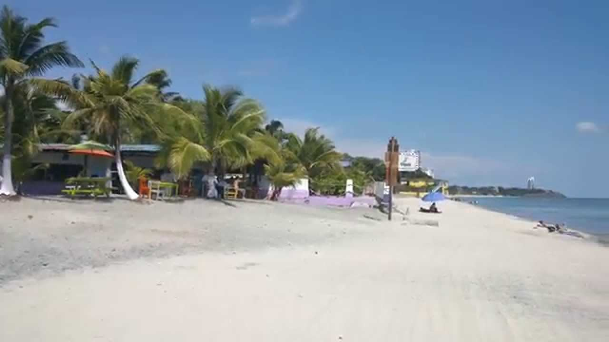

Farallón es uno de los destinos turísticos más visitados en Coclé, conocido por sus resorts de lujo y actividades acuáticas para toda la familia.
Ubicación:
Farallón está en la provincia de Coclé, a unos 120 km (1.5 a 2 horas en coche) al oeste de la Ciudad de Panamá, en la costa pacífica.
Atracciones Principales:
- Playa Farallón
- Corredor de Playas
- Royal Decameron(resort de lujo)
- Isla de Contadora
Accesibilidad:
Fácil acceso en coche desde la Ciudad de Panamá, el Aeropuerto Internacional Scarlett Martínez, y Penonomé. También se puede llegar en bus a Antón y luego tomar un taxi a la playa.
Actividades Adicionales:
Deportes acuáticos como kayak, paddleboarding y jet ski, excursiones a Isla Contadora, relajación en resorts y golf.